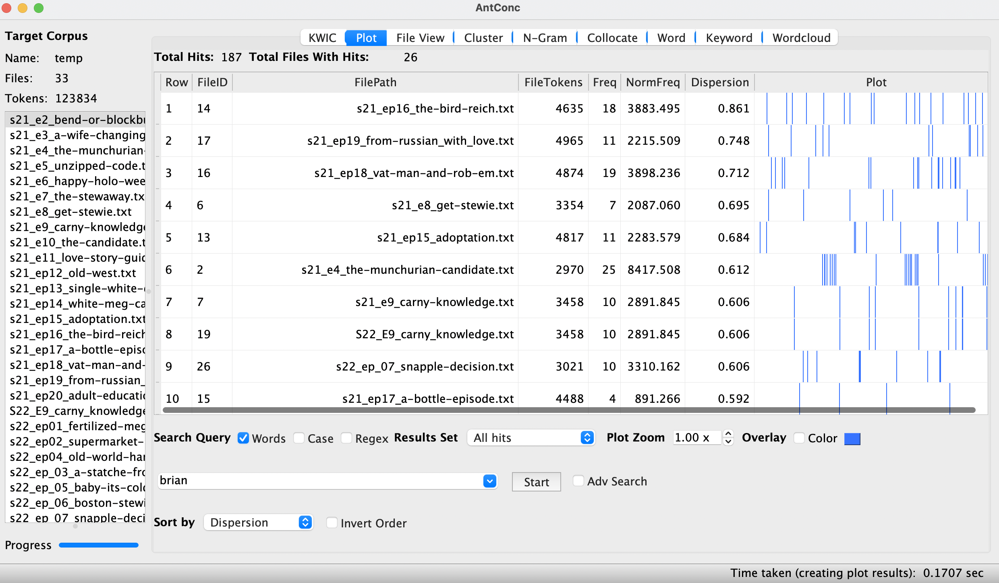
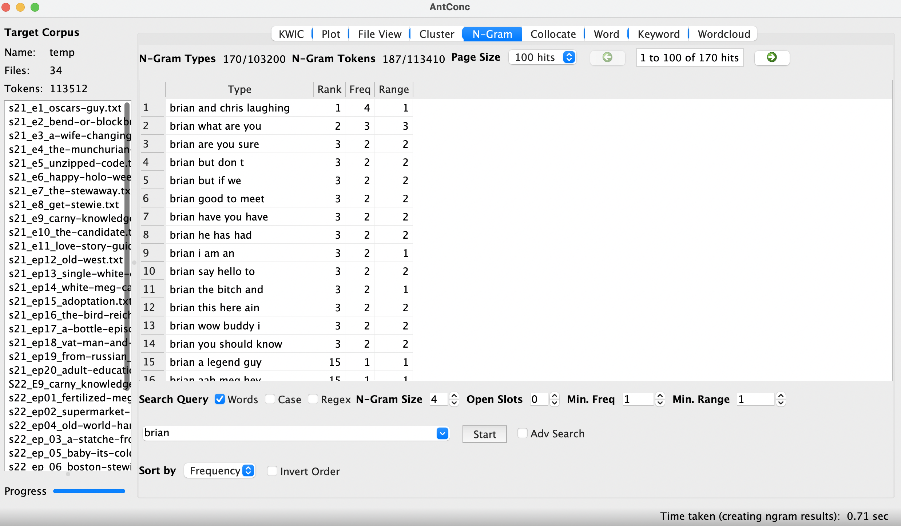

For our Data Analysis, we wanted to see how often certain characters appeared throughout the show. We first started with the main character, Peter Griffin.
We wanted to view the most common phrases with Peter's name. We found it was best to use three worded phrases as two worded phrases were mostly the same. With four and five worded phrases, they became less common which was not useful in our findings. For the most part, the word "peter" shows up the most in season 22 episode five, Baby It's Cold Inside.
For our next analysis, we wanted to view how often Brian shows up within the show.
Additionally, we wante dto see themost common phrases that include Brian's name. He is one of the most popular characters in Family Guy, not including Peter.
